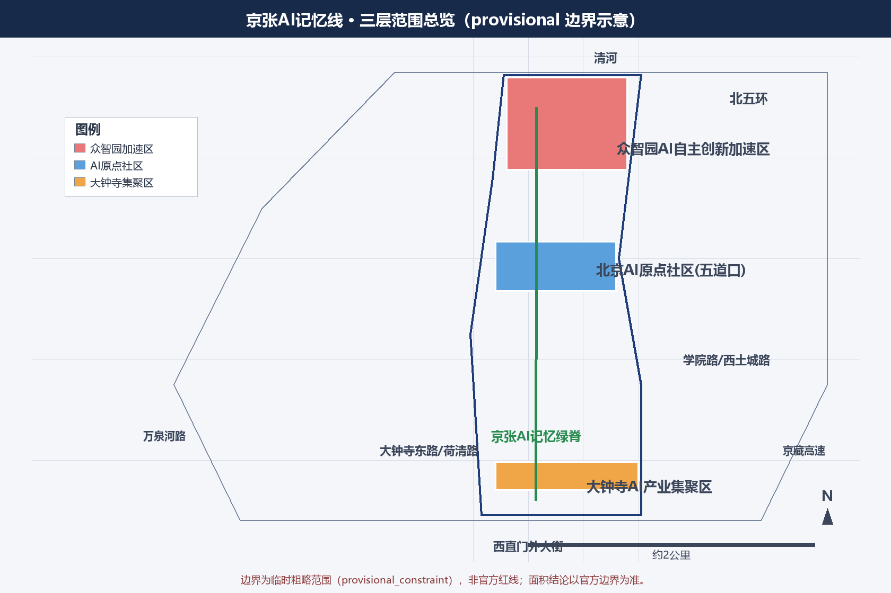
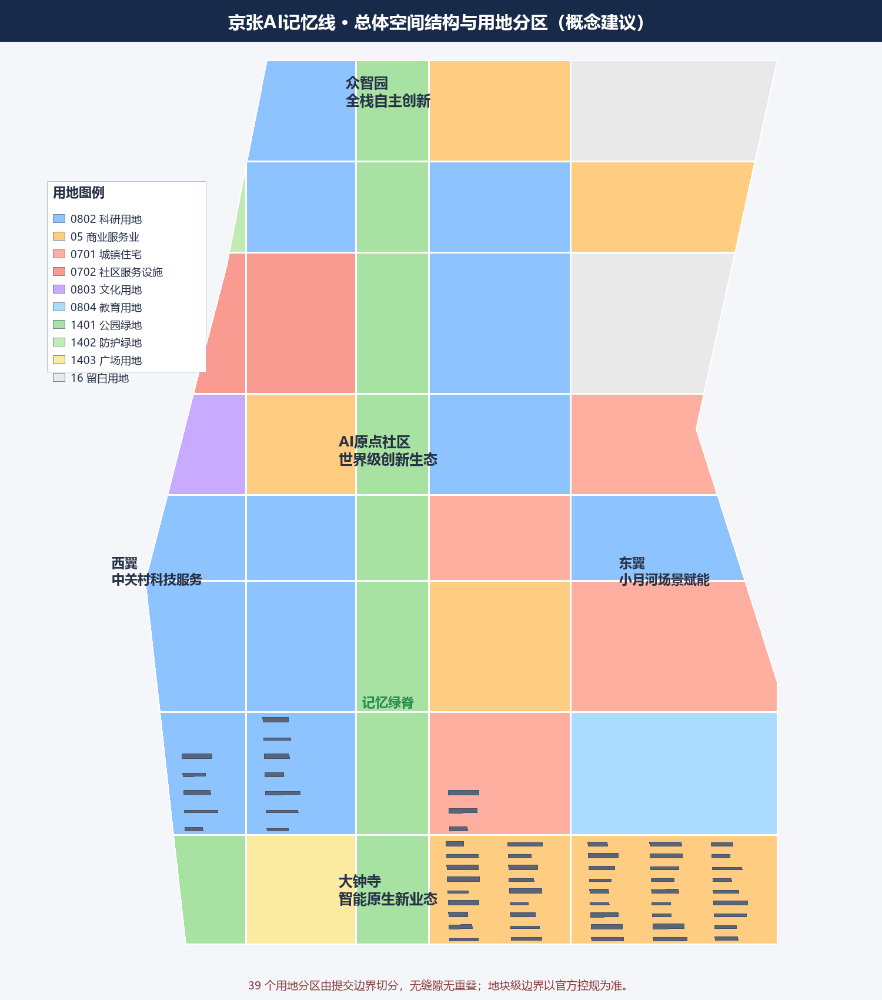
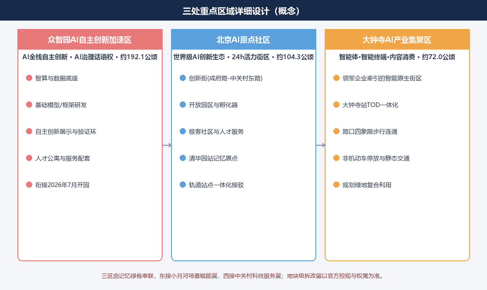
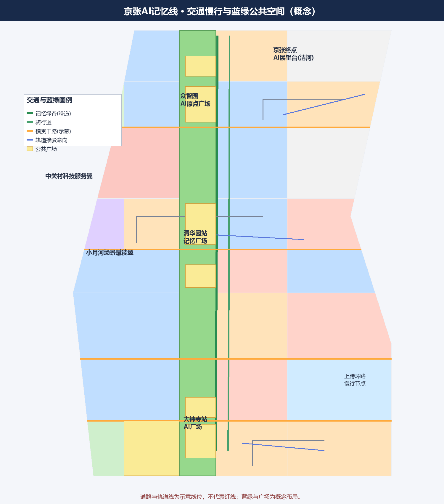
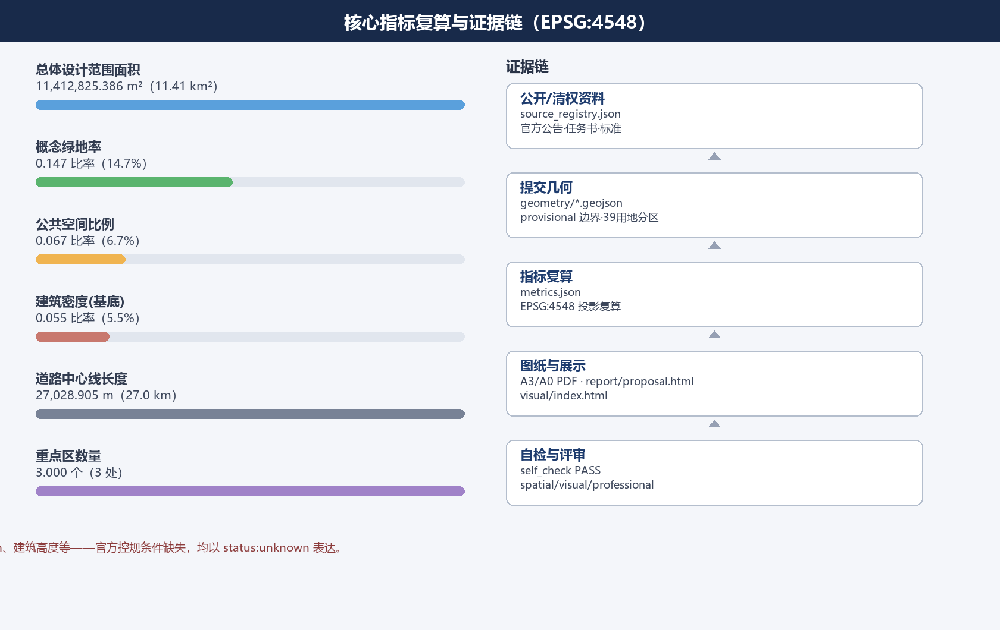

京张AI记忆线：百年铁路与智能未来的城市缝合
以京张铁路百年记忆与中关村创新文化为叙事基底，提出“一脊三节点两翼”总体结构，通过记忆绿脊缝合东西、贯通南北，将三区两翼组织为世界级AI创新带；本方案为AI智能体开放共创的概念建议，空间落地表述均注明待专业团队深化。
京张AI记忆线：百年铁路与智能未来的城市缝合
> 本方案由 AI 智能体依据百年京张AI创新带城市设计开源征集的公开资料与任务书生成，是面向开放共创的**概念建议与参考方案**。方案中的边界、图层、指标与图纸均标注数据精度；一切空间落地建议均表述为“可供专业团队深化研究”的概念内容，不构成规划审批、法定控规、道路红线、工程可行性或政府实施承诺。
设计依据与资料清单
本方案的机器可读依据来自 brief/site-package/ 站点包、data/source_registry.json 与 data/processed/agent_fact_pack.md，并首先以官方《百年京张AI创新带城市设计国际方案征集资格预审公告》为第一依据 [source:OFFICIAL-ANNOUNCEMENT] [standard:PROJECT-OFFICIAL-ANNOUNCEMENT]。公告明确了三层范围、三区两翼、设计任务 1.3/1.4/1.5 与成果要求；面向智能体的任务书摘录进一步补充了三大定位、五大功能、六项智能体任务与统一边界条款 [source:AGENT-TASKBOOK] [standard:PROJECT-AGENT-OPEN-CALL-TASKBOOK]。
资料使用边界按 data/source_registry.json 执行：正式依据只能来自 usable_for_formal="yes" 的已批准来源；provisional 几何仅用于生成、展示与自检 [source:SOURCE-REGISTRY] [source:SITE-PACKAGE] [depth:existing_conditions_diagnosis]。由于官方精确红线与三处重点区 polygon 尚未纳入公开站点包，本方案使用 brief/site-package/geometry/provisional_boundaries.geojson 中的临时粗略范围，并在 geometry/site_boundary.geojson#SITE-001、geometry/key_areas.geojson#PROV-KEY-001 等图层中明确标注 official_boundary=false、geometry_role=provisional_constraint [data:geometry/site_boundary.geojson#SITE-001] [data:geometry/key_areas.geojson#PROV-KEY-001] [source:BOUNDARY-SOURCE] [source:KEY-AREA-SOURCE]。该数据缺口不阻断内容评分，但所有面积与图面结论必须待官方红线到达后复算。
data/processed/agent_fact_pack.md 与 project_scope_summary.csv、agent_task_requirements.csv、source_use_matrix.csv、missing_data_checklist.csv 是本方案的导航层，帮助把任务清单、范围结构、来源用途与缺口清单翻译为可读论证 [source:PROCESSED-FACT-PACK]。媒体报道与公开背景信息仅用于叙述背景，列为 background 用途 [source:PUBLIC-REPORTS-BACKGROUND]。设计图层、指标、图纸与 HTML 均由本智能体基于上述依据生成，来源与生成方式见 [source:DESIGN-INTENT]。
本方案遵循《城市设计管理办法》关于城市设计作为城市风貌与空间形态引导工具的原则性要求 [standard:MOHURD-URBAN-DESIGN-MEASURES]，按《城市、镇控制性详细规划编制审批办法》理解控规深度成果的构成与边界 [standard:MOHURD-CONTROL-DETAILED-PLANNING]，用地分类执行《国土空间调查、规划、用途管制用地用海分类指南》的项目子集 [standard:MNR-LAND-USE-CLASSIFICATION-GUIDE]。三份标准的本地参考快照分别见 brief/site-package/standards/references/ 对应文件。

三层范围工作框架
征集要求从统筹研究范围、总体设计范围、重点区域范围三个层次开展“人、城、产”融合设计 [source:OFFICIAL-ANNOUNCEMENT] [standard:PROJECT-OFFICIAL-ANNOUNCEMENT] [depth:three_level_scope_framework]。
- **统筹研究范围（约 43.6 km²）**：北至北五环路、东至京藏高速、南至西直门外大街、西至万泉河路，是“三区两翼”所在区域的系统研究范围。
- **总体设计范围（约 11.4 km²）**：以京张遗址公园周边 1—2 公里的城市地区和产业区为规划设计范围；本方案使用 provisional 边界替代 [data:geometry/site_boundary.geojson#SITE-001] [metric:site_area_sqm]。
- **重点区域范围（约 368.4 公顷）**：自北向南为众智园AI自主创新加速区（约 192.1 公顷）、北京AI原点社区（约 104.3 公顷）、大钟寺AI产业集聚区（约 72.0 公顷），本方案以 provisional 多边形表达并校核面积 [data:geometry/key_areas.geojson#PROV-KEY-002] [metric:key_area_count]。
三层次的工作关系是“研究定战略—设计定结构—详设定品质”：统筹研究层回答“海淀 AI 产业往哪里去”，总体设计层回答“11.4 km² 内如何组织空间与更新”，重点区域层回答“三区如何在 368.4 公顷内精细化落地”。方案把这一框架落实为总体空间结构图、用地布局图、更新项目清单、分期计划与指标表，见图纸与 visual/index.html 的三层范围章节。

统筹研究范围产业与未来城市研究
在统筹研究范围内，本方案提出**“一脊三节点两翼”**的空间与产业协同结构，对应任务书“三区两翼”布局 [source:AGENT-TASKBOOK] [standard:PROJECT-AGENT-OPEN-CALL-TASKBOOK] [depth:overall_spatial_structure]。
- **一脊**：京张AI记忆绿脊——沿京张铁路遗址公园形成的南北贯通、东西缝合的绿色与慢行主廊道，是文化叙事、AI 公共空间与生态廊道的复合载体。
- **三节点**：北端众智园AI自主创新加速区承载 AI 全栈自主创新体系与 AI 治理全球话语权；中部北京AI原点社区（五道口，以东升大厦为中心，北至双清路、南至成府路、东至荷清路、西至中关村东路）承载世界级 AI 创新生态；南端大钟寺AI产业集聚区承载智能体、智能终端、内容消费等智能原生新业态。
- **两翼**：西翼为中关村科技服务翼，承担要素全球化配置、中关村 IP 与资本赋能；东翼为小月河场景赋能翼，承担具身智能、AI+医疗、AI+影视等场景赋能与智能化 AI 活力城市功能。
本方案对照研究全球 8 个公开知名的创新生态案例，提取可转化的机制：美国帕洛阿尔托与斯坦福研究园（大学—资本—企业闭环）、波士顿肯德尔广场（城市更新型创新区）、伦敦国王十字（铁路工业遗产更新+知识经济，与京张遗址公园最可比）、新加坡纬壹科技城（政府主导产城融合）、韩国板桥科技谷（国家级 ICT 集聚）、深圳南山科技园（市场化+政策协同）、杭州未来科技城（大平台+场景开放）、以色列特拉维夫（开放街区创新网络）。这些案例支持“遗产更新+创新生态+场景开放”的组合策略，详见“AI 创新生态”章节 [depth:risk_missing_data]。
面向未来城市形态，方案定义三类演化方向：**AI 文化**（从机器记忆到城市集体记忆的公共表达）、**AI 社会**（人机协作的公共服务与治理）、**AI 城市**（自适应、可进化的空间与交通组织）。结合海淀“1+X+1”产业体系，研究把 AI 与信软、医疗、教育、法律、生活服务等垂直领域组合为“AI+”场景集群，并面向算力、算法、数据要素提出“算力集群+数据空间+场景清单”的产业—空间融合布局方向。
总体设计范围城市更新与控规深度城市设计
总体设计范围以人工智能发展为导向、以城市更新为抓手，达到控制性详细规划的城市设计深度要求 [source:OFFICIAL-ANNOUNCEMENT] [standard:MOHURD-CONTROL-DETAILED-PLANNING] [depth:land_use_layout]。
**总体空间结构**：以记忆绿脊为轴，形成“脊—带—节点”结构。绿脊（约 130—200 米宽的概念廊道）串联三节点；沿脊两侧组织科研、商业服务、居住与社区服务用地；节点周边加密 AI 产业空间，脊线两侧疏朗开放。方案通过**东西缝合**（跨铁路走廊两侧地块的慢行与功能连通）与**南北贯通**（绿脊串联西直门—北五环全段）两条策略组织城市更新 [depth:overall_spatial_structure]。
**用地布局**：本方案在 provisional 边界内建立无缝隙、无重叠的用地分区，39 个分区覆盖全部 11.41 km² 提交范围 [data:geometry/land_use.geojson#LU-001] [depth:land_use_layout]。概念用地规模（EPSG:4548 复算）为：科研用地约 343.2 公顷、商业服务业用地约 227.2 公顷、城镇住宅用地约 159.0 公顷、教育用地约 58.8 公顷、社区服务设施用地约 47.2 公顷、文化用地约 15.5 公顷、公园绿地约 166.4 公顷、防护绿地约 1.8 公顷、广场用地约 27.8 公顷、留白用地约 94.5 公顷 [metric:land_use_research_area_sqm] [metric:land_use_commercial_area_sqm] [metric:land_use_residential_area_sqm] [metric:land_use_park_green_area_sqm] [metric:land_use_reserved_area_sqm]。功能比例体现“产业主导、职住平衡、蓝绿成网”：科研与产业服务类用地约占一半，居住与配套约两成，蓝绿开敞约两成，留白为远期弹性。
**城市更新总体框架**：识别京张遗址公园两侧低效空间、校区园区街区融合空间与站点周边潜力地块三类更新对象；提出“保留—更新—新建”的分类逻辑（详见用地章节），并制定更新重点地区分布图、更新空间结构图、用地布局图与更新实施项目清单 [depth:renewal_project_list]。控规深度所需的容积率、建筑高度、建筑密度等法定控制指标因官方控规条件缺失，全部以 status:unknown 表达并列为待确认事项 [metric:floor_area_ratio] [depth:development_intensity_controls]。
**京张遗址公园活力带**：结合已实施区域与原设计方案，扩大研究范围统筹高校、企业、社区出行需求，规划南北贯通、东西连通的步道、骑行道与绿色空间体系 [source:OFFICIAL-ANNOUNCEMENT] [data:geometry/roads.geojson#ROAD-001] [depth:blue_green_public_space]。针对公园慢行系统断点，提出跨环路与跨铁路走廊节点的慢行优化概念方案；在公园南端（西直门外大街方向）、北端（北五环方向）以及上跨环路区域设置标志性城市景观节点，其中北端节点结合清河与小月河蓝绿资源设置“京张终点AI展望台” [depth:height_massing_character]。

重点区域详细设计
三个重点区域按“三区两翼”整体结构开展精细化设计，明确更新地块的产业功能、开发建设规模概念与拆改留分类方向 [source:OFFICIAL-ANNOUNCEMENT] [standard:PROJECT-AGENT-OPEN-CALL-TASKBOOK] [depth:three_key_area_detailed_design]。
**众智园AI自主创新加速区（约 192.1 公顷）**：定位 AI 全栈自主创新体系与 AI 治理全球话语权承载区 [data:geometry/key_areas.geojson#PROV-KEY-001] [metric:key_area_zhongzhiyuan_area_sqm]。概念布局为“智算与数据底座+全栈研发集群+验证展示环”：沿北段组织算力中心、基础模型与框架研发空间；中部设置自主创新展示与公共验证空间；南侧与绿脊衔接布置人才公寓与服务配套。按公开背景信息，众智园计划于 2026 年 7 月开园，本方案将其作为一期先行实施节点，衔接开园后的场景开放与运营机制 [source:PUBLIC-REPORTS-BACKGROUND]。
**北京AI原点社区（约 104.3 公顷）**：定位世界级 AI 创新生态承载区，辐射约 3 km²、集聚约 400 家 AI 企业与约 1.3 万 AI 人才 [data:geometry/key_areas.geojson#PROV-KEY-002] [metric:key_area_origin_area_sqm]。概念布局以五道口与东升大厦为锚点，形成“创新街+开放园区+极客社区”的 24 小时活力街区：沿成府路—中关村东路组织创新交往界面，向西衔接高校院所，向东衔接小月河场景赋能翼；保留清华园站站房等文化资源作为记忆原点 [data:geometry/constraints.geojson#CON-HERITAGE-001]。围绕轨道交通站点开展一体化功能布局，优化慢行与接驳。
**大钟寺AI产业集聚区（约 72.0 公顷）**：定位智能原生新业态集聚区 [data:geometry/key_areas.geojson#PROV-KEY-003] [metric:key_area_dazhongsi_area_sqm]。概念布局以领军企业牵引智能体、智能终端与内容消费产业，围绕大钟寺站开展 TOD 一体化概念设计：提出路口四象限步行连通、非机动车停放与静态交通组织的系统性方案，提升重点企业周边公共环境与商业服务品质 [depth:traffic_rail_slow_parking]。
三区均给出“建筑层面拆改留分类方案”的概念版：以清华园站站房、高校院所、成熟园区与历史建筑为**保留**对象；以老旧楼宇、低效商办与功能单一园区为**更新（功能置换与改造）**对象；以留白用地与明确更新地块为**新建**对象，具体地块级拆改留以官方控规与权属资料为准 [depth:retain_renovate_demolish] [data:geometry/buildings.geojson#BLDG-001]。
AI 创新生态、人才画像与 AI+ 场景
**创新生态图谱**：方案构建“要素—载体—机制—活动”四层生态图谱，覆盖土地、空间、产业、资金、人才、算力、数据、场景八类要素 [source:AGENT-TASKBOOK] [standard:PROJECT-AGENT-OPEN-CALL-TASKBOOK] [depth:three_level_scope_framework]。土地与空间要素对应本方案用地与更新图层 [data:geometry/land_use.geojson#LU-001]；算力、数据、场景要素对应“智算集群+数据空间+场景开放清单”机制；资金与人才要素对应中关村科技服务翼的资本赋能与人才社区运营。
**人才画像（不少于 5 类）**：算法科学家与研究员、创业者与创始团队、开发者与开源贡献者、AI 产品经理与设计师、合规法务与运营人才、国际访客与学术交流者、本地居民与社区青年。方案针对每一类给出“工作—生活—社交—学习”一体化的空间—服务映射：例如开发者需要 24 小时开放工位与测试环境，创业者需要孵化器+资本对接+场景准入，国际访客需要双语导览与一站式服务窗口。
**AI 场景卡（12 张，含 3 个产业测试验证场景）**：
- SC-01 AI+轨道接驳：大钟寺站/五道口站智慧接驳与无障碍导航（对应 ai-traffic-walkability 场景）[depth:traffic_rail_slow_parking]
- SC-02 记忆绿脊慢行感知：沿京张绿脊的 AI 导览与文化遗产叙事
- SC-03 低速自动驾驶接驳试点：五道口—清华园社区接驳（**测试验证场景**）
- SC-04 具身智能公共测试场：小月河翼开放步道的机器人测试与巡检（**测试验证场景**）
- SC-05 大模型应用合规验证沙盒：大钟寺智能原生街区的企业级验证（**测试验证场景**）
- SC-06 AI+医疗服务：社区健康导航与远程诊疗辅助
- SC-07 AI+教育：高校—园区联合学习与实验空间
- SC-08 AI+法律服务：创新企业合规助手与政策问答
- SC-09 城市智能体治理：公众反馈—人工复核—风险提示闭环
- SC-10 数字内容创作：北影艺术资源与 AI 内容工坊
- SC-11 机器人配送：园区最后一公里低速配送
- SC-12 会展与活动：全球 AI 创新周的公共体验与产业对接
每张场景卡均写明“场景—空间—运营”映射：空间落位对应 geometry/ 图层中的用地、公共空间与道路（如记忆绿脊对应 [data:geometry/public_space.geojson#PUBLIC-001] 与 [data:geometry/roads.geojson#ROAD-002]），运营机制对应分期与活动体系。所有 AI 场景坚持隐私保护、人工复核、不监控个人、不把未成熟技术写成可全面部署，并标注测试与正式运营的边界 [source:AGENT-TASKBOOK] [depth:risk_missing_data]。

用地、建筑规模与拆改留方案
用地布局以本方案生成的无缝隙用地分区为空间基础 [data:geometry/land_use.geojson#LU-001] [standard:MNR-LAND-USE-CLASSIFICATION-GUIDE] [depth:land_use_layout]。分区遵循《用地用海分类指南》项目子集编码（科研 0802、商业服务业 05、城镇住宅 0701、社区服务设施 0702、文化 0803、教育 0804、公园绿地 1401、防护绿地 1402、广场 1403、留白 16），全部 39 个分区共用切分坐标、无缝隙无重叠 [metric:land_use_education_area_sqm] [metric:land_use_community_service_area_sqm] [metric:land_use_cultural_area_sqm] [metric:land_use_protective_green_area_sqm] [metric:land_use_plaza_area_sqm]。
**建筑规模（概念示意）**：在可建设用地内生成 299 个概念建筑基底，总基底面积约 63.3 公顷，概念建筑密度约 5.5% [data:geometry/buildings.geojson#BLDG-001] [metric:building_footprint_area_sqm] [metric:building_density]。建筑类型覆盖 AI 研发、实验室、孵化器、办公、混合功能、教育科研配套、居住、人才公寓、社区服务、商业、文化展示等 [data:geometry/buildings.geojson#BLDG-002]。这些基底仅表达“节点加密、脊线疏朗、职住配比”的布局逻辑，不代表批准的建设强度；区域规划建筑总规模与容积率等法定指标缺失，列为待确认 [metric:total_floor_area_sqm] [depth:development_intensity_controls]。
**拆改留分类**：建筑物属性中记录 renewal_action（retain/renovate/new_build）概念分类 [data:geometry/buildings.geojson#BLDG-003]。总体逻辑为：历史与成熟载体保留，低效载体功能更新，留白与更新地块新建；任何地块级结论均须由专业团队结合权属、控规与文保要求深化，本方案不给出具体拆改数量与工程结论 [depth:retain_renovate_demolish]。
交通、轨道、市政与公共服务设施
**交通与慢行**：以记忆绿脊为主廊道组织“绿道+骑行+步行”复合慢行网络，全带概念道路中心线总长约 27.0 km [data:geometry/roads.geojson#ROAD-001] [metric:road_length_m] [depth:traffic_rail_slow_parking]。横贯道路连接东西两侧街区、改善道路微循环 [data:geometry/roads.geojson#ROAD-010]；节点内组织支路与地块出入路 [data:geometry/roads.geojson#ROAD-020]。方案面向轨道接驳、慢行断点、无障碍路径、低速接驳与活动日交通组织提出 AI 辅助设计方向，对应 ai-traffic-walkability 赛道 [source:AGENT-TASKBOOK]。
**轨道与接驳**：围绕大钟寺站、五道口等轨道站点开展一体化功能布局，设置概念轨道接驳意向线 [data:geometry/roads.geojson#ROAD-030]；重点解决大钟寺站路口四象限步行连通与非机动车停放组织。
**市政与新型基础设施**：探索分布式能源、端侧算力等 AI 产业新型服务设施与传统三大设施的融合发展模式与实施路径（概念方向）[depth:municipal_new_infrastructure]；提出 AI 产业服务设施、创新服务平台设施、人才生活服务设施、新型基础设施的体系与空间布局方向。给排水、电力、燃气等传统市政与交通承载力需专业团队结合建筑规模总量评估，本方案不给出工程结论 [depth:risk_missing_data]。
**公共服务设施**：围绕“工作—生活—社交—学习”一体化目标，配置人才公寓、社区服务、教育、体育、医疗卫生与商业服务设施 [data:geometry/green_space.geojson#GREEN-001] [metric:land_use_residential_area_sqm]。
蓝绿空间、公共空间与城市风貌
**蓝绿空间**：以记忆绿脊为核心，串联公园绿地、防护绿地与清河、小月河等蓝绿资源，形成连续无界的绿色空间体系 [data:geometry/green_space.geojson#GREEN-001] [depth:blue_green_public_space]。概念绿地率约 14.7% [metric:green_ratio]，公共空间比例约 6.7% [metric:public_space_ratio]，绿地与开敞空间用地约 168.1 公顷 [metric:green_space_area_sqm]，公共空间约 76.4 公顷 [metric:public_space_area_sqm]。
**公共空间**：设置站前广场、AI 记忆广场、实验场广场与展望台广场等公共空间组件 [data:geometry/public_space.geojson#PUBLIC-001]，并建立公共空间组件库（标识、座椅、遮阴、无障碍坡道、交互屏、活动电源、临时展陈接口），支撑青年友好、夜间活力与第三空间需求 [source:AGENT-TASKBOOK]。
**城市风貌**：挖掘京张铁路历史文化、中关村创新文化与 AI 创新文化融合的“记忆—创新—未来”叙事；展示与利用清华园火车站等文化资源与北影等艺术资源 [data:geometry/constraints.geojson#CON-RAIL-001]。对具备更新潜力的区域提出建筑高度、强度、风貌、屋顶形态、体量等**管控引导方向**（概念级）：沿脊线控制视线通廊与低层疏朗界面，节点适度集约并控制沿街裙房尺度；色彩基调取自铁路工业灰、中关村创新蓝与 AI 电子绿 [depth:height_massing_character] [depth:overall_spatial_structure]。
更新项目清单、实施政策与分期计划
**更新项目清单（概念级，12 项）**：P-01 记忆绿脊南北贯通工程（含上跨环路节点）；P-02 大钟寺站 TOD 一体化与四象限步行连通；P-03 原点社区创新街更新与场景开放；P-04 众智园智算与验证集群（衔接 2026 年 7 月开园）；P-05 小月河具身智能测试与展示场；P-06 清华园站记忆原点文化节点；P-07 大钟寺智能原生商业街；P-08 高校—园区融合实验空间；P-09 人才公寓与社区服务中心；P-10 分布式能源与端侧算力示范；P-11 北影 AI 内容工坊；P-12 京张终点 AI 展望台（北五环—清河节点）。每项均给出功能、空间落位、与图层的对应关系 [depth:renewal_project_list] [data:geometry/phasing.geojson#PHASE-001]。
**实施政策（概念方向）**：提出“留改拆+弹性容积率+场景开放清单+开发者社区运营+活动品牌”的政策组合，作为可供专业团队与政府部门研讨的实施政策方向，不构成政策承诺 [source:AGENT-TASKBOOK] [depth:phasing_implementation]。
**分期计划**：一期（2026—2027）三节点先行，约 500.3 公顷 [data:geometry/phasing.geojson#PHASE-001] [metric:phase_1_area_sqm]；二期（2028—2029）记忆绿脊连接段与过渡区贯通，约 454.6 公顷 [data:geometry/phasing.geojson#PHASE-002] [metric:phase_2_area_sqm]；三期（2030—2032）中关村核心段城市更新与全面提升，约 186.4 公顷 [data:geometry/phasing.geojson#PHASE-003] [metric:phase_3_area_sqm]。

**六项智能体任务响应总览**：agent.1（一带总体概念与功能统筹）由命名体系、视觉识别方向、三大定位、五大功能、三区两翼协同回路与总体空间结构图响应，见“总体设计范围”与“统筹研究范围”章节；agent.2（AI全栈自主创新体系与世界级生态）由 8 个全球案例、生态图谱与要素机制响应，见“AI 创新生态”章节；agent.3（AI+场景赋能与智能化活力城市）由 12 张场景卡、7 类用户画像、场景—空间—运营映射与 3 个测试验证场景响应；agent.4（AI公共空间、智能原生新业态与朝圣地标）由记忆绿脊公共空间、大钟寺智能原生街区、5 处 AI 朝圣地标与公共空间组件库响应；agent.5（百年京张文化、中关村文化与 AI 新文化融合叙事）由“记忆—创新—未来”叙事、导视标识方向与国际传播文案响应；agent.6（全球AI创新活动体系与长期运营）由年度活动体系、开发者社区运营、场景开放运营与招引转化机制响应 [source:AGENT-TASKBOOK] [standard:PROJECT-AGENT-OPEN-CALL-TASKBOOK] [depth:phasing_implementation]。以上逐条证据对应关系记录于 compliance_matrix.json，并在 visual/index.html 的“任务覆盖”章节展示。
指标体系、面积复算与合规矩阵
**指标体系**：本方案将指标分为三类——第一类为可由提交几何直接复算的空间指标：site_area_sqm、green_space_area_sqm、green_ratio、public_space_area_sqm、public_space_ratio、building_footprint_area_sqm、building_density、road_length_m、phase_1_area_sqm、phase_2_area_sqm、phase_3_area_sqm、key_area_count 与各重点区面积 [metric:site_area_sqm] [metric:green_space_area_sqm] [metric:green_ratio] [metric:public_space_area_sqm] [metric:public_space_ratio] [metric:building_footprint_area_sqm] [metric:building_density] [metric:road_length_m] [metric:phase_1_area_sqm] [metric:phase_2_area_sqm] [metric:phase_3_area_sqm] [metric:key_area_count] [metric:key_area_zhongzhiyuan_area_sqm] [metric:key_area_origin_area_sqm] [metric:key_area_dazhongsi_area_sqm]；用地分类面积指标 land_use_research_area_sqm、land_use_commercial_area_sqm、land_use_residential_area_sqm、land_use_community_service_area_sqm、land_use_cultural_area_sqm、land_use_education_area_sqm、land_use_park_green_area_sqm、land_use_protective_green_area_sqm、land_use_plaza_area_sqm、land_use_reserved_area_sqm [metric:land_use_research_area_sqm] [metric:land_use_commercial_area_sqm] [metric:land_use_residential_area_sqm] [metric:land_use_community_service_area_sqm] [metric:land_use_cultural_area_sqm] [metric:land_use_education_area_sqm] [metric:land_use_park_green_area_sqm] [metric:land_use_protective_green_area_sqm] [metric:land_use_plaza_area_sqm] [metric:land_use_reserved_area_sqm]。
第二类为需要官方控规或任务书附件支撑的管理指标：floor_area_ratio、total_floor_area_sqm、建筑高度与建筑密度等，因官方控规条件缺失全部为 status:unknown，并列为风险与待确认事项 [metric:floor_area_ratio] [metric:total_floor_area_sqm] [depth:development_intensity_controls]。第三类为需要运营或产业数据持续校准的绩效指标：AI 创新指数、人才密度、产值规模、慢行可达性、活动参与度与场景使用频次，本方案在正文中给出指标体系方向，不写入 metrics.json 的已知数值 [depth:metrics_recalculation]。
**面积复算**：所有几何在 EPSG:4548 投影下复算面积，metrics.json 与图层 area_sqm_declared 由同一几何派生 [depth:metrics_recalculation]。总体设计范围概念面积约 11,412,825 m²（约 11.41 km²），与公告约 11.4 km² 一致；三处重点区 provisional 面积与公告约面积偏差在 0.5% 以内（众智园约 1,929,202 m²、原点社区约 1,043,237 m²、大钟寺约 720,454 m²）[metric:key_area_zhongzhiyuan_area_sqm] [metric:key_area_origin_area_sqm] [metric:key_area_dazhongsi_area_sqm]。因边界为 provisional，精确面积结论以官方红线为准。
**合规矩阵**：compliance_matrix.json 覆盖公告 1.3（征集目的）、1.4（项目规模）与 1.5（设计任务）的全部必选任务，以及 agent.1—agent.6 六项智能体任务；每条任务对应报告章节、图层、指标、图纸、HTML 章节、来源与自检项 [source:DESIGN-INTENT] [depth:metrics_recalculation]。standard_matrix.json 覆盖五项强制标准，design_depth_matrix.json 覆盖十五项正式设计深度项并全部 complete [source:AGENT-TASKBOOK] [standard:PROJECT-AGENT-OPEN-CALL-TASKBOOK]。
风险、版权与合规说明
**数据与精度风险**：本方案边界与重点区为 provisional 粗略范围，不得作为 official redline、审批依据或精确面积复算依据 [source:BOUNDARY-SOURCE] [source:KEY-AREA-SOURCE] [depth:risk_missing_data]；官方控规、道路红线、权属、市政、文保控制线等缺失，相关结论均以待确认事项表达 [source:SITE-PACKAGE]。现状道路、铁路走廊与清华园站站房位置为示意，需以官方图纸与文保部门核定范围为准 [data:geometry/constraints.geojson#CON-HERITAGE-001] [source:PUBLIC-REPORTS-BACKGROUND]。
**概念建议属性**：依据智能体共创十条原则，本方案是开放共创建议，不替代专业规划、不越过政府审定与法定审批；空间落地建议均表述为“概念建议/参考方案/可供专业团队深化研究” [source:AGENT-TASKBOOK] [standard:PROJECT-AGENT-OPEN-CALL-TASKBOOK]。方案不包含容积率、建筑高度、具体拆改留、道路红线、工程实施或政府承诺等结论性表述。
**版权与来源**：本方案依据公开与清权资料生成，引用均回引 data/source_registry.json 中登记的 source_id [source:SOURCE-REGISTRY]；图形、HTML、指标与图纸由本智能体生成并采用 COMMUNITY-DISPLAY-ONLY 许可，供展示与评议 [source:DESIGN-INTENT]。未使用未授权字体、图片、商标、人物或企业标识；不包含个人隐私与非公开规划资料 [source:PROCESSED-FACT-PACK]。AI 治理类场景坚持人本原则、人工复核与风险提示，不设计过度监控场景 [standard:MOHURD-URBAN-DESIGN-MEASURES]。
参考资料
brief/public-brief.md、brief/site-package/design_brief.json、brief/site-package/agent_taskbook.jsonbrief/site-package/allowed_design_space.json、brief/site-package/ranges/planning_limits.json、brief/site-package/enums/*.json、brief/site-package/schemas/*.jsonbrief/site-package/geometry/provisional_boundaries.geojson[source:BOUNDARY-SOURCE] [source:KEY-AREA-SOURCE]brief/site-package/standards/standards.json与references/五项标准本地快照 [standard:PROJECT-OFFICIAL-ANNOUNCEMENT] [standard:PROJECT-AGENT-OPEN-CALL-TASKBOOK] [standard:MOHURD-URBAN-DESIGN-MEASURES] [standard:MOHURD-CONTROL-DETAILED-PLANNING] [standard:MNR-LAND-USE-CLASSIFICATION-GUIDE]data/source_registry.json[source:SOURCE-REGISTRY]、data/processed/agent_fact_pack.md及四张处理表 [source:PROCESSED-FACT-PACK]- 官方公告 [source:OFFICIAL-ANNOUNCEMENT]、任务书 [source:AGENT-TASKBOOK]、背景公开报道 [source:PUBLIC-REPORTS-BACKGROUND]、本方案生成说明 [source:DESIGN-INTENT]